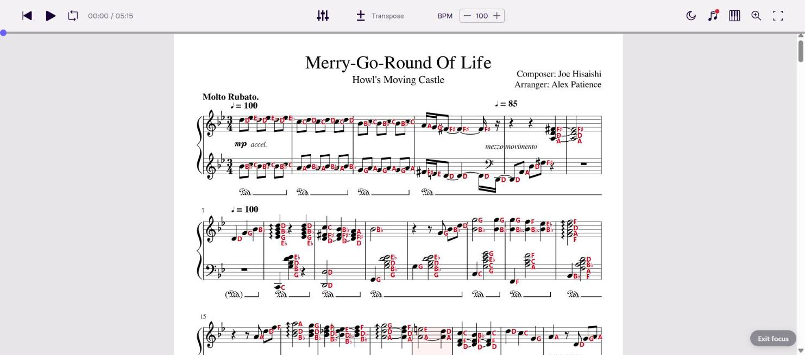
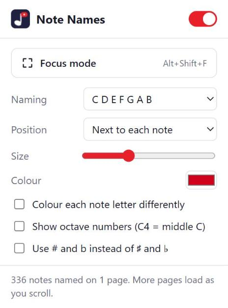
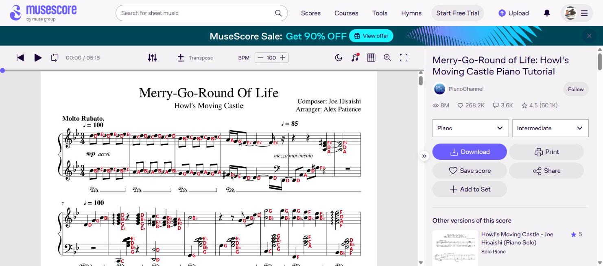

Note Names
for MuseScore
For Chrome
Andante♩ = 92
Free and open source. MIT licence. No account and nothing tracked.
for MuseScore
For Chrome
Andante♩ = 92
Free and open source. MIT licence. No account and nothing tracked.
See the name of every note on musescore.com. Read a new piece without counting lines.

A real score on musescore.com. Focus mode is on.
Each name comes from the music itself. The extension checks the clef and the key signature. It also tracks every accidental in the bar.
Click the toolbar icon to change the settings. Pick a naming system and a size.
Want to test yourself? Press Alt + N to hide the names.

One click hides the clutter. Banners, sidebars and pop-ups all go. The pages and the player stay.
Turn it on with Alt + Shift + F. Press Esc to leave.

chrome://extensions and turn on Developer mode. Click Load unpacked and pick the folder.Some old scores are only images. Their notes can't be read. The popup will tell you.